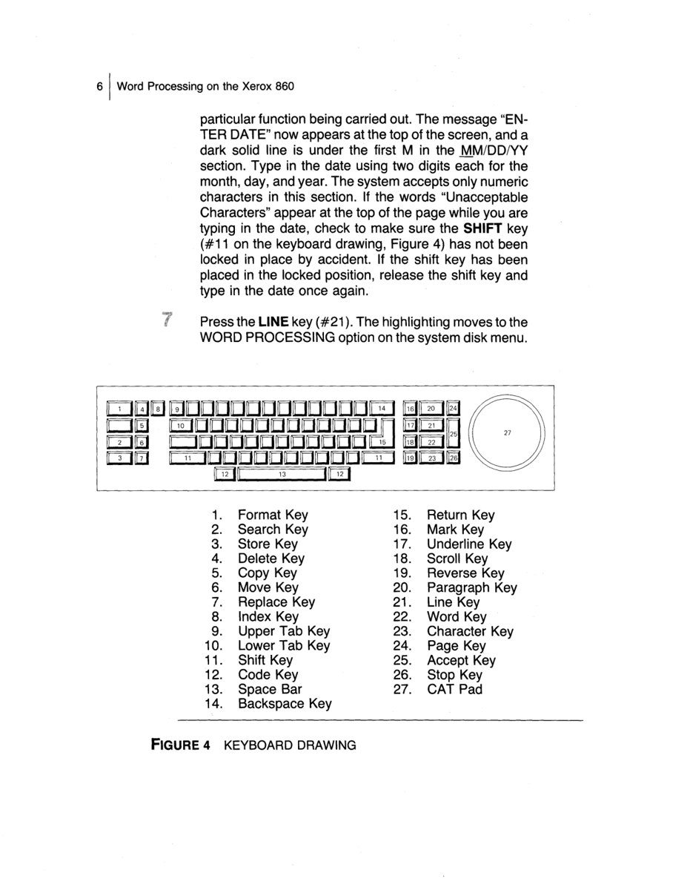

1980
Xerox Corporation
Xerox Cat
A circular capacitive touchpad — arguably the first shipped on a computer — in the Xerox 860 keyboard

A circular capacitive touchpad — arguably the first shipped on a computer — in the Xerox 860 keyboard
